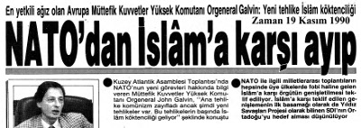
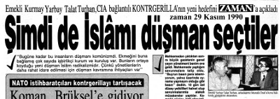
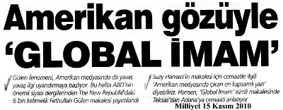

Kaynakça ve Açıklamalar
(1) Yargılayanları Yargılıyorum! Bomba Davası Savunma-1, Talat Turhan, Sorun Yayınları, 3. Baskı, Eylül 2004.
(2) Dr. V. Fatih Güven, “Terörizm Olgusunda Dinin Yeri”, Stratejik Analiz, Haziran 2004 sayısı.
(3) “Bir Danışman Ama Kimin?”, Özgen Acar, Cumhuriyet, 11 Şubat 2011.
(4) “Şimdi de İslamı düşman seçtiler”19 Kasım 1990 Zaman Gazetesi.
(5) General Galvin, 29 Kasım 1990, Zaman gazetesindeki demeci.
(6) “ABD’nin Truva Atı”, B. Bozgeyik, Yeni Asya, 21 Şubat 1991.
(7) Black Water, Jeremy Schill, April Yayıncılık, Ağustos 2010.
(8) Hayatımın Beş Yılı, Murat Kurnaz, Merkez Kitaplar, Ekim 2007.
(9) Kuzey Afrika’nın batı ve doğusu.
(10) Emperyalistlerce finanse edilen ve yönlendirilen NGO’lar tepki çekince bunlara “Sivil Toplum Kuruluşu” (STK) denilmeye başlandı. Günümüzde bu örgütler, siyasi partilerle birlikte anılıyor. Emperyalistlerin fonlarıyla beslenenler çıkarları adına ancak işbirlikçilik yapabilirler.
a- Sivil Örümceğin Ağında/Project Democracy, Mustafa Yıldırım, Ulus Dağı Yayınları, 13. baskı, Haziran 2006.
b- Mont Pelerin-Küresel Sermayenin Beyni, Talat Turhan-M. Eymen, İleri Yayınları, Mart 2005
c- Satılık Vatan, Yılmaz Dikbaş, Asya Şafak Yayınları 1. baskı, Ekim 2005.
d- Gaflet, Dalalet, Hıyanet, Yılmaz Dikbaş, Asya Şafak Yayınları, 11. baskı, Ekim 2007.
(11) Mısır Ordusu’nun İçini Oyup Kim Kağıttan Kaplan Yaptı”, Soner Yalçın, Hürriyet, 13 Şubat 2011.
(12) Başbakan R.Tayyip Erdoğan 30 Kasım 2010’da Libya’da Kaddafi’nin ödülünü aldı.
(13) House of Bush, House of Saud, Craig Unger, Serbiner, 2004
(14) Nguyen Koo Ki Vietnam’dan ABD’ye kaçtığında yanında sadece 490.000 TL parası vardı. Ancak kısa bir süre içinde 3,36 milyon TL değerinde bir villa satın almış ve Kaliforniya eyaletinde 3 milyon TL değerinde bir meyhane açmış, son model bir Cadillac arabayla gezmeye başlamıştı. Kao Ki de diğer işbirlikçi liderler gibi halkını soydu. Ancak halkına hıyanet ettiği için servetine el konulmadı.
(15) Kral Hüseyin: “20 yıldan beri CIA’dan para aldım”, Millyet, 1 Mart 1977.
(16) a- Sivil Örümceğin Ağında, Mustafa Yıldırım, Ulusdağı Yayınları, 13. baskı, Haziran 2006.
b- Gaflet, Dalalet, Hıyanet, Yılmaz Dikbaş, Asya Şafak Yayınları 4. baskı, Ekim 2007.
c- Satılık Vatan, Yılmaz Dikbaş, Asya Şafak Yayınları, 1. baskı, Ekim 2005.
d- Mont Pelerin, Talat Turhan-M.Eymen, İleri Yayınları 1. baskı, Mart 2005.
(17) Yeni Türkiye Cumhuriyeti, Graham E. Fuller, Timaş Yayınları, Nisan 2008 .
(18) a- Dış İşleri Bakanı Ahmet Davutoğlu, 26 Mart 2011 günü TRT-Türk’e verdiği demeçte acaba ne demek istiyordu? Mealen: “1911’den 1923’e kadar süren dağılma döneminin tarihi bütünleşmesini ya başaracağız ya da acılar yaşamanın eşiğindeyiz.”
b- M. Kemal bu dağılmayı toparlayıp Cumhuriyet’i kurmamış mıydı?
c- Prof. Mümtazer Türköne Mealen: “Ergenekon’la biz darbe dönemini kapattık, öldürdük, tabutuna çivi çakıp mezara koyup üstünü örttük” (27 Şubat günü, Kanal 35 TV’de yayınlanan “Askeri Vesayetin Sonu” konu başlıklı “açıkoturum”da sarf edilen bu cümlenin benzerleri diğer katılımcılar [Gültekin Avcı, Mehmet Metiner, Önder Aytaç] tarafından dile getirildi.)
(19) 17’de a.g.y.
(20) Ortağın Çocuğu, Mustafa Yıldırım, Ulus Dağı Yayınları, 2010.
(21) “Mormonlar Türkiye’de”, Boxer Dergisi, 23 Mayıs 2009.
(22) “Turgut Nereye Koşuyor”, Emin Çölaşan, Tekin Yayınevi, 1992.
(23) www.mormonlar.org
(24) “ABD İstihbarat işlerinin başında ABD Büyükelçisi Var”, Barış, dizi yazı, 16 Nisan 1975.
(25) Çeteleşme, Talat Turhan, Akyüz yayıncılık, 1999.
(26) Bomba Davası/Savunma-1, Talat Turhan, 1986.
(27) Milliyet, 22 Ağustos 2010.

Talat Turhan’ın demeci 10 gün sonra Avrupa Müttefik Kuvvetler Yüksek Komutanı
Orgeneral John Galvin tarafından doğrulandı:
“Yeni tehlike İslam kökten dinciliği.”